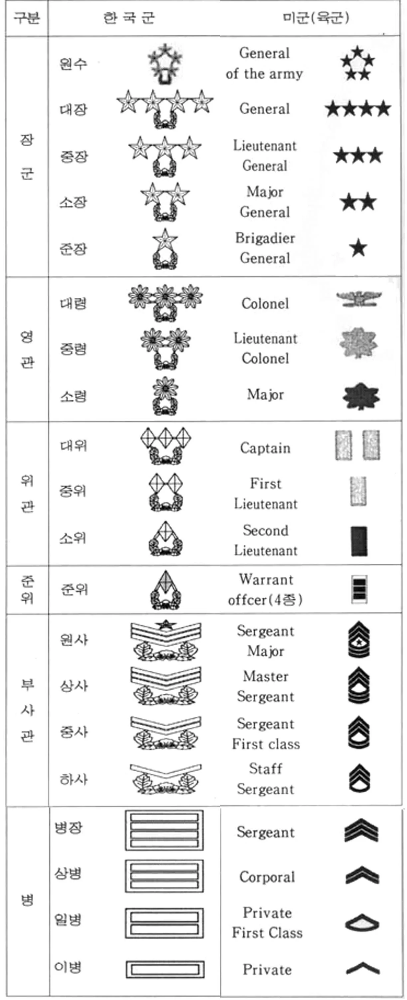
대한민국 육군의 계급장 변천사를 알아보도록 하겠다
1. 1946년 4월 (남조선국방경비대 시기) ~ 1954년 4월
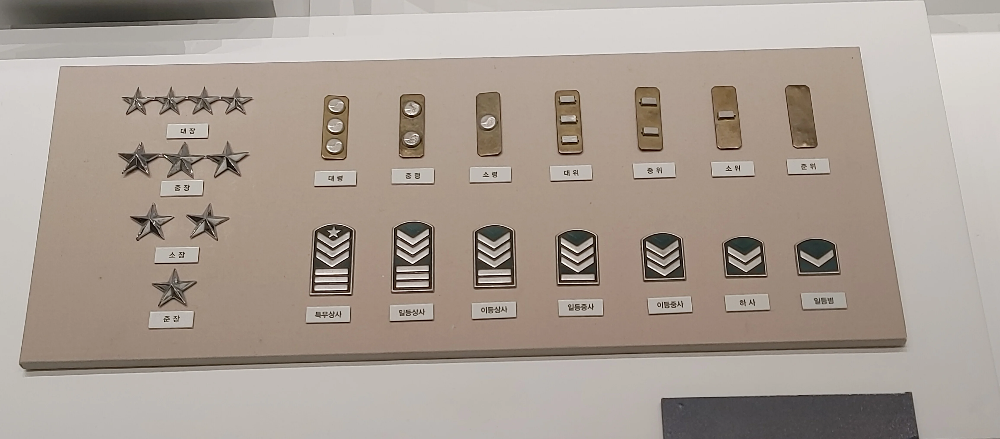
창군 당시 육군, 해군, 공군 3군 모두 계급장의 모양과 계급체계가 달랐는데.....
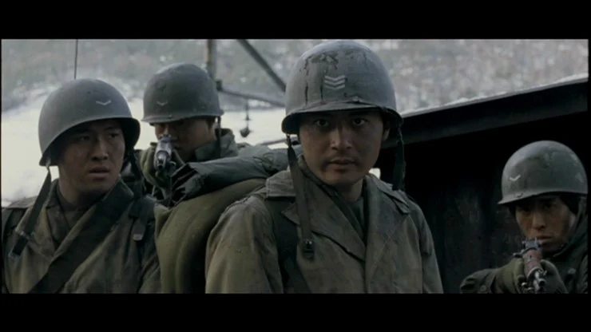
사병의 계급장은 쐐기모양으로 미군식 계급체계를 도입했으며 (이등병 -> 일등병 -> 하사 (병사 계급) -> 이등중사 -> 일등중사 -> 이등상사 -> 일등상사 -> 특무상사)
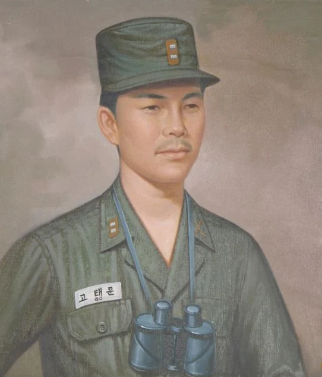
위관급 장교는 직사각형 모양의 계급장을 사용했고
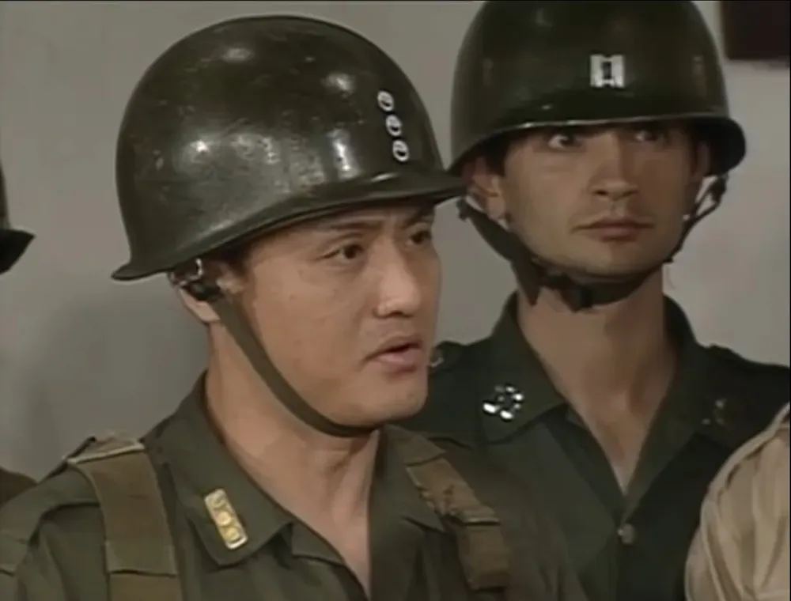
영관급 장교는 태극무늬 계급장을 사용했다.
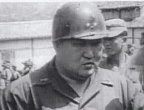
장성급은 현재와 비슷하나 계급장에 무궁화 받침이 없었다.
2. 1954년 5월 ~ 1971년 2월
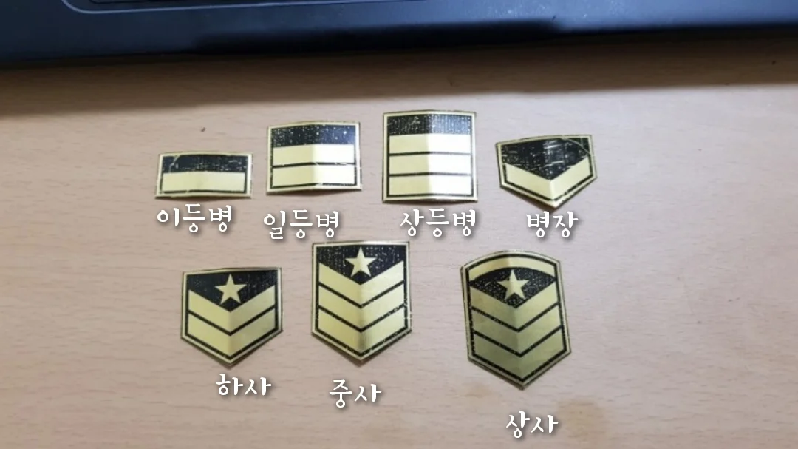
1962년 4월부터 병사 계급장 모양이 작대기로 변했으며
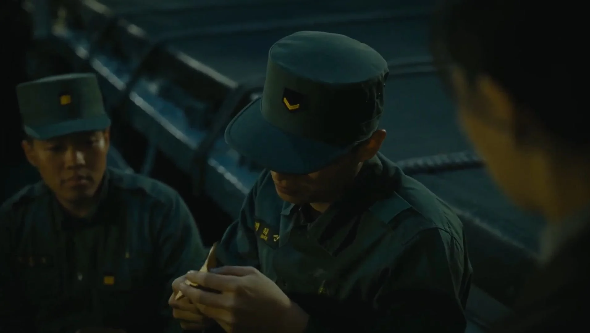
특이하게 병장 계급장이 쐐기모양이었다.
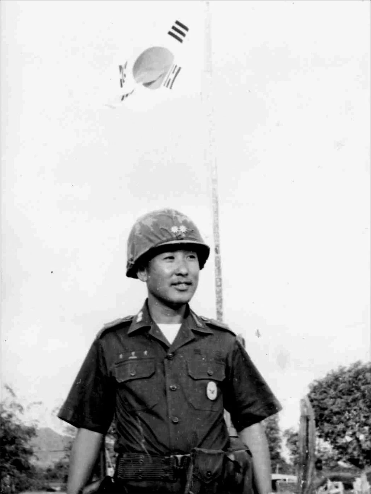
영관급 장교도 대나무잎 계급장을 사용하게 되었다.
3. 1971년 2월 ~ 1996년 9월
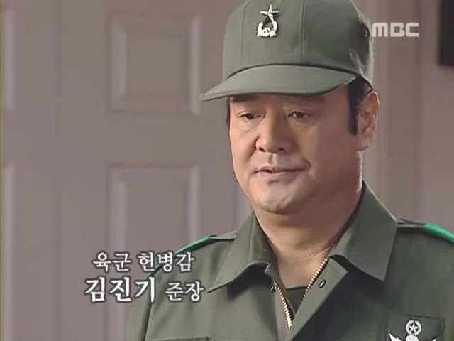
1975년 10월부터 장성급 장교 계급장에 무궁화 받침이 추가됐으며
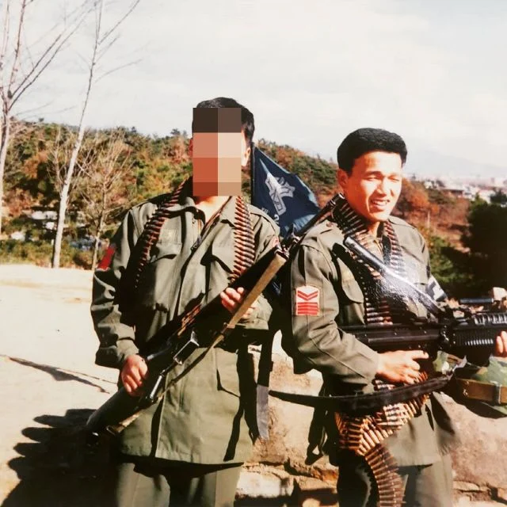
1971년 2월에는 사병 계급장을 노란색과 빨간색으로 바꾸고 병장은 작대기 4개로 변경, 하사관의 쐐기 계급장은 작대기 4개를 추가했다.
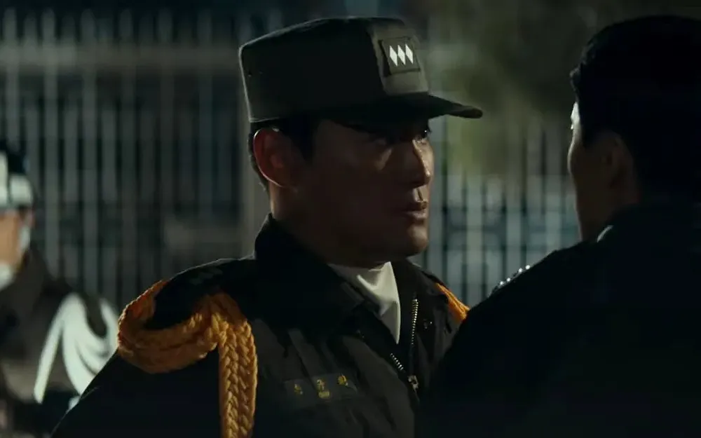
장성 계급장이 개정될때 위관급, 영관급은 변경사항이 없었으나
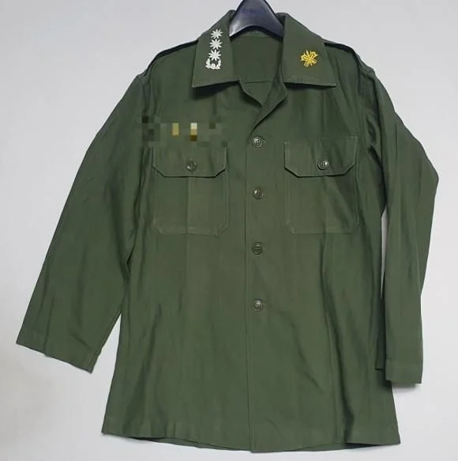
1980년 7월, 무궁화 받침이 추가 되었다.
4. 1996년 10월 ~
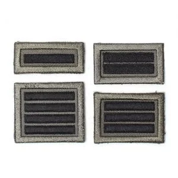
드디어 검은색 작대기 계급장이 탄생했고
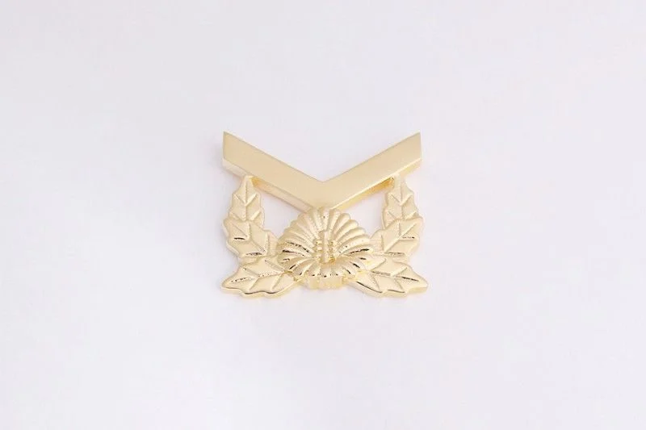
부사관 계급장에 작대기를 빼고 무궁화 받침을 추가했다.
우리꺼가 디자인적으로 더 이뻐보인다 직관적이고